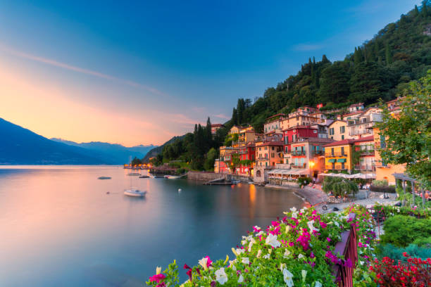
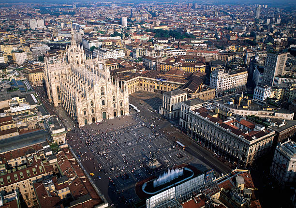

Ruta sugerida
La ruta para este día incluye un trayecto desde Zúrich hasta Milán, pasando por Lucerna, Lugano y el Lago de Como. A continuación, se detallan las paradas y puntos de interés:
1. Zúrich → Lucerna (50 km, 45 minutos en coche)
Qué ver en Lucerna:
- Puente de la Capilla (Kapellbrücke): Un puente cubierto medieval icónico.
- León Herido: Monumento conmovedor dedicado a los soldados suizos.
- Lago de los Cuatro Cantones: Pasea por sus orillas o haz un pequeño recorrido en barco.
- Casco histórico: Disfruta de sus calles adoquinadas y edificios pintorescos.

El Puente de la Capilla (Kapellbrücke) en Lucerna, un ícono medieval.
2. Lucerna → Lugano (170 km, 2 horas en coche)
Ruta: Atravesarás los Alpes por el túnel de San Gotardo, disfrutando de paisajes espectaculares.
Qué ver en Lugano:
- Lago de Lugano: Pasea por sus orillas o disfruta de las vistas desde Monte Brè o Monte San Salvatore.
- Parco Ciani: Un parque tranquilo junto al lago.
- Centro histórico: Explora sus calles llenas de encanto y tiendas exclusivas.

El Lago de Lugano, rodeado de montañas y paisajes impresionantes.
3. Lugano → Lago de Como (35 km, 40 minutos en coche)
Qué ver en el Lago de Como:
- Pueblo de Como:
- Visita la espectacular Catedral de Como (Duomo).
- Pasea por los jardines y el paseo marítimo.
- Brunate: Accesible por funicular, ofrece vistas panorámicas del lago.
- Si tienes tiempo adicional, explora otros pueblos como Bellagio o Varenna.

El Lago de Como, un destino lleno de encanto y belleza natural.
4. Lago de Como → Milán (50 km, 1 hora en coche)
Qué ver en Milán:
- Plaza del Duomo: Admira la impresionante Catedral gótica.
- Galería Vittorio Emanuele II: Una joya arquitectónica y comercial.
- Castillo Sforzesco: Explora su historia y jardines.

La Plaza del Duomo en Milán, con su impresionante Catedral gótica.
Alojamiento en Milán
Te alojarás en el siguiente establecimiento:
BB Hotels Aparthotel Isola
- Tipo de habitación: Estudio
- Precio base: € 105,55
- IVA: € 10,55
- Impuesto municipal: € 9,80
- Precio total: € 125,90
Mapa de la Ruta
Gastos
En esta ruta, los gastos aproximados son los siguientes:
- Peajes: 20 € (estimado para la ruta)
- Gasolina: 50 € (305 km con un consumo de 7 l/100 km y precio de 1.40 €/l)
- Comida: 100 € (estimado para dos adultos)
- Alojamiento: 125,90 € (precio total de la reserva)
- Total estimado: 295,90 €